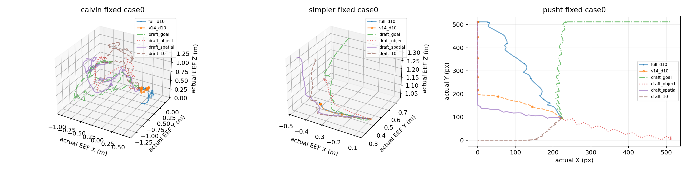

每环境全部六条件；缺失与解码失败明确保留。PushT 是二维接口压力测试。
中文报告 · 独立分母成功率图 · 实际XYZ/XY轨迹图

| 环境 | 条件 | MP4 / 播放器 | 完整解码 |
|---|---|---|---|
| calvin | full_d10 | 打开MP4 | 通过 |
| calvin | v14_d10 | 打开MP4 | 通过 |
| calvin | draft_goal | 打开MP4 | 通过 |
| calvin | draft_object | 打开MP4 | 通过 |
| calvin | draft_spatial | 打开MP4 | 通过 |
| calvin | draft_10 | 打开MP4 | 通过 |
| simpler | full_d10 | 打开MP4 | 通过 |
| simpler | v14_d10 | 打开MP4 | 通过 |
| simpler | draft_goal | 打开MP4 | 通过 |
| simpler | draft_object | 打开MP4 | 通过 |
| simpler | draft_spatial | 打开MP4 | 通过 |
| simpler | draft_10 | 打开MP4 | 通过 |
| pusht | full_d10 | 打开MP4 | 通过 |
| pusht | v14_d10 | 打开MP4 | 通过 |
| pusht | draft_goal | 打开MP4 | 通过 |
| pusht | draft_object | 打开MP4 | 通过 |
| pusht | draft_spatial | 打开MP4 | 通过 |
| pusht | draft_10 | 打开MP4 | 通过 |